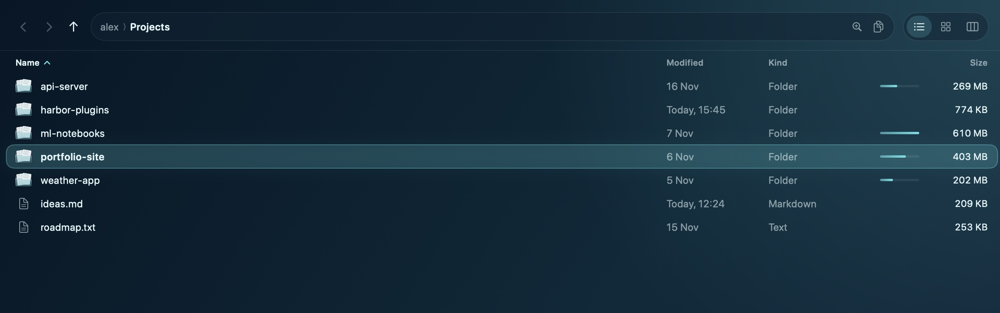
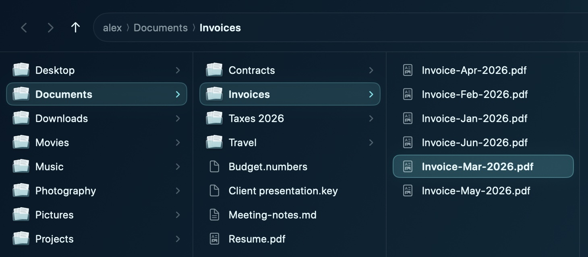
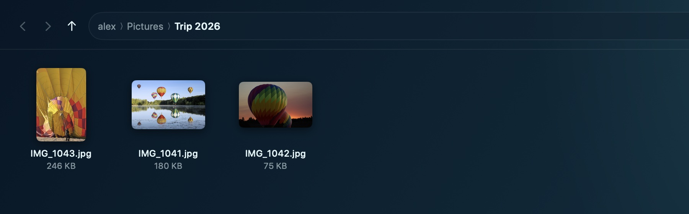
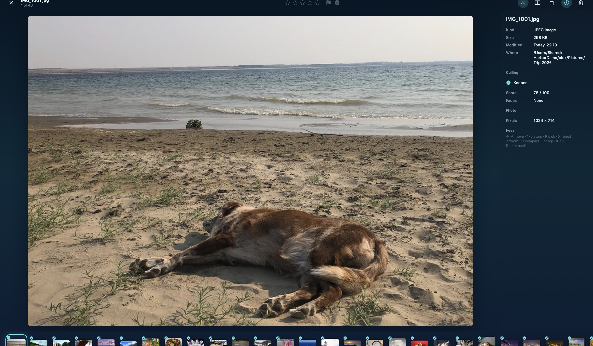
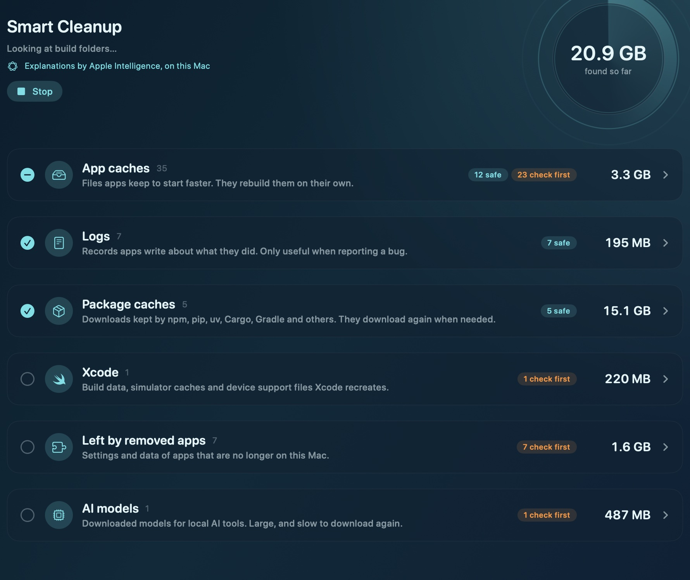

Your Mac, the way
your hands remember.
Harbor brings File Explorer's address bar, real cut and paste, and folder sizes to the Mac. Then it adds what Explorer never had: search that sees inside your photos, and a cleanup that explains every folder before anything is deleted.

Same moves.
New keys.
Finder makes you relearn everything. Harbor keeps what twenty years of Windows taught your hands, and maps it to the Mac keyboard. ⌘X finally means cut.
See what's big before you go looking.

Type what you remember. Not what you named it.PRO
Every photo below is called IMG_10-something. Ask for what's in it. Harbor reads each picture on your Mac, once, and finds the ones that match.
The same search in Harbor. Type in the search field of any folder and the window keeps only what matches, in the order Harbor ranks it.

Real results: Harbor's own ranking on 46 public-domain photos. Photo credits.
A thousand photos. One key each.PRO
Press K and Harbor scores the whole folder: blurry frames, closed eyes and near-duplicates get flagged. You go through with the arrow keys and decide.

Delete with reasons, not with fear.PRO
Smart Cleanup finds caches, build folders, old installers and what removed apps left behind. Each one comes with a plain sentence about what it is, and a verdict.

Six folders. One window.PRO
Open a pane with ⌘\, up to six. F5 copies the selection to the pane you used last, F6 moves it. Try it.
- Blender-4.5.dmg128 MB
- boarding-pass.pdf212 KB
- font-pack.zip96 KB
- Xcode_26.xip768 MB
- Itinerary.pdf188 KB
- node_modules384 MB
- README.md301 KB
- src154 KB
- backups—
- www—
- Camera—
- Screenshots—
- march.pdf44 KB
- april.pdf52 KB
Your files stay on your Mac. All of them.
On-device
Photo search, culling and cleanup explanations all run on your Mac, so your pictures and folders never travel anywhere.
No account
Pro is a licence key you paste into Settings, so there is no sign-up, password or profile to manage.
No tracking
Harbor contains no analytics or ads, and goes online only to check for updates and your licence.
Free for every day. $19 once for the rest.
No subscription. Every Pro feature is on for your first 14 days, then $19 keeps them on one Mac, with every 1.x update.
Harbor
- Address bar, cut and paste, tabs, pins, tags
- Folder sizes and a disk view
- Fast photo viewer with RAW, zoom and EXIF
- ZIP files and network shares
Harbor Pro
- Everything in Free
- Search photos by what's in them
- Stars, flags, culling, compare and crop
- Smart Cleanup with explanations
- Split View, up to six panes
- 7z and RAR, SFTP and FTP, Android and iPhone
Before you ask.
Is the free version really free?
Yes. Browsing, folder sizes, the photo viewer, ZIP files and network shares are free forever, with no ads. For your first 14 days every Pro feature is on too; after that, Pro adds them back for $19.
Does Pro work offline?
Yes. Harbor checks your licence when you're online and keeps working for 30 days between checks.
Can I move my licence to a new Mac?
Yes. One key works on one Mac at a time. Turn it off on the old Mac in Settings › Licence, then enter it on the new one.
Why does Harbor ask for Full Disk Access?
To show the sizes and contents of folders macOS protects, like Mail and Library, and to find caches during cleanup. Harbor never uploads your files.
Why does macOS ask me to confirm before opening Harbor?
Apple checks apps from developers who pay it $99 a year, and I haven't paid that fee for Harbor. So the first time you open it, macOS asks you to confirm: go to System Settings › Privacy & Security and click Open Anyway. You only do this once; updates install normally after that.
Does it replace Finder?
It runs next to Finder. Use Harbor every day and keep Finder for the few things only it does.
What if it's not for me?
Draft policy: write to us within 14 days of buying and you get a full refund.